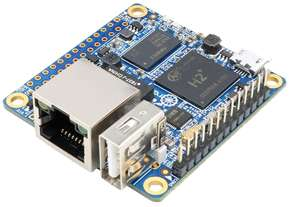
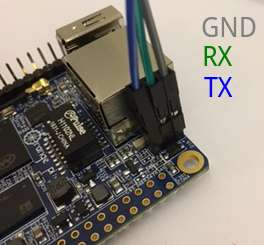
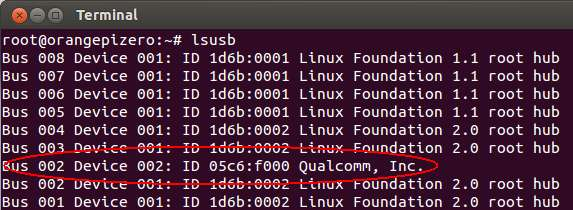
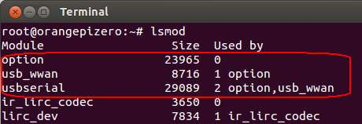

说明：本文以Orange Pi Zero为例，但是对大多数Linux都是适用的。
出于成本、体积等考虑，我希望使用Orange Pi Zero来替代Raspberry Pi。Orange Pi Zero只要55元，用的是国产的全志H2+芯片，板载以太网、WiFi、USB，还有26个GPIO（包括I2C和SPI），还有一个独立的调试串口，性价比狂高。Orange Pi Zero长这样：

一开始使用了Orange Pi官方提供的几个系统镜像，但都不太理想，其中酸甜苦辣就不多说了。后来惊喜地发现一个开源项目Armbian，它是专门给各种ARM开发板（比如与树莓派类似的Orange Pi和Banana Pi）移植的Debian或Ubuntu系统。Armbian也为Orange Pi Zero提供了两个镜像，一个是Debian，一个是Ubuntu，点此进入下载页面。
目前Debian是Jessie版本，我下载下来了，得到Armbian_5.24_Orangepizero_Debian_jessie_3.4.113.7z（点此链接可以从我的百度网盘下载）。以后版本可能会变动，应该步骤都是一样的。解压后得到Armbian_5.24_Orangepizero_Debian_jessie_3.4.113.img。使用dd命令刷入SD卡，插入Orange Pi Zero。Orange Pi Zero自带的调试串口是以太网口旁边的3个引脚，从外到内分别为GND、RX和TX：

上电之后，可以通过串口获取一堆启动信息。最后，显示登录提示符，帐号是root，密码是1234。然后根据提示修改密码、创建账户。不再赘述，登录之后如图：

为了方便之后安装软件，我使用以太网。插入网线，手动获取ip地址：
dhclient eth0
命令结束之后，应该能够看到eth0有了ip地址了。
下载pkg-config（编译安装usb_modeswitch需要用到）：
apt-get install pkg-config
接着就可以按照《Linux 使用USB 4G上网卡（usb_modeswitch的使用）》中的四个步骤安装usb_switchmode了。
安装完usb_modeswitch之后，插入USB 4G模块，发现设备没有被识别。需要手动切换USB模式。首先查看该USB 4G模块的Vendor ID和Product ID：
lsusb

说明Vendor ID为05c6，Product ID为f000。然后手动使用usb_modeswitch切换其状态：
usb_modeswitch -v 05c6 -p f000 -c /usr/share/usb_modeswitch/05c6:f000
此时，应该就能通过：
ls /dev | grep ttyUSB
查看到ttyUSB0、ttyUSB1、ttyUSB2和ttyUSB3。
如果还是没有，则可能是因为驱动程序没有自动加载，可以如下手动加载驱动。要使用USB 4G模块（3G也一样），需要用到三个.ko文件，分别是usbserial.ko、usb_wwan.ko和option.ko。它们的依赖关系为：usbserial.ko不需要依赖，usb_wwan.ko依赖usbserial.ko，option.ko依赖usbserial.ko和usb_wwan.ko。因此加载的顺序是usbserial.ko、usb_wwan,ko和option.ko：
insmod /lib/modules/$(uname -r)/kernel/drivers/usb/serial/usbserial.ko insmod /lib/modules/$(uname -r)/kernel/drivers/usb/serial/usb_wwan.ko insmod /lib/modules/$(uname -r)/kernel/drivers/usb/serial/option.ko
可以通过
lsmod
查看是否成功加载：

一旦在/dev目录下有了ttyUSB0、ttyUSB1、ttyUSB2和ttyUSB3，那么就可以使用wvdial来建立ppp连接了，详见《Linux 使用USB 3G上网卡（wvdial的使用）》。